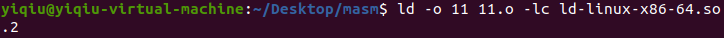

前言
故事的经过是这样的：
汇编：
链接：

运行：
分析
？？？
待我ls一下：
？？？？？？？？？？？？？？？
？？？？？？？？？？？？？？？？？？？？？？？？？？？？逐渐诡异起来了
难道链接器出问题了？试试ldd
不太对劲起来了，用readelf看一下程序需要什么ld
我们看到：[Requesting program interpreter: /lib/ld64.so.1]，程序需要ld64.so.1这个interpreter，可是我链接的时候用的是ld-linux-x86-64.so.2啊
不对劲

电脑里根本没有这个共享库，程序运行的时候要动态链接这个库，但是找不到，于是程序跑不起来
解决方法
既然找不到这个共享库，那我们就把程序的interpreter换了，这里用到的是patchelf，网上有安装教程，最好自己下载官方的安装包进行安装，apt install的版本太老了
把你想用的ld拖到同一目录下，这里我用的是ld-linux-x86-64.so.2
然后执行
1 | patchelf --set-interpreter ld-linux-x86-64.so.2 11 |
再次使用ldd和readelf查看程序

这次应该刑了吧